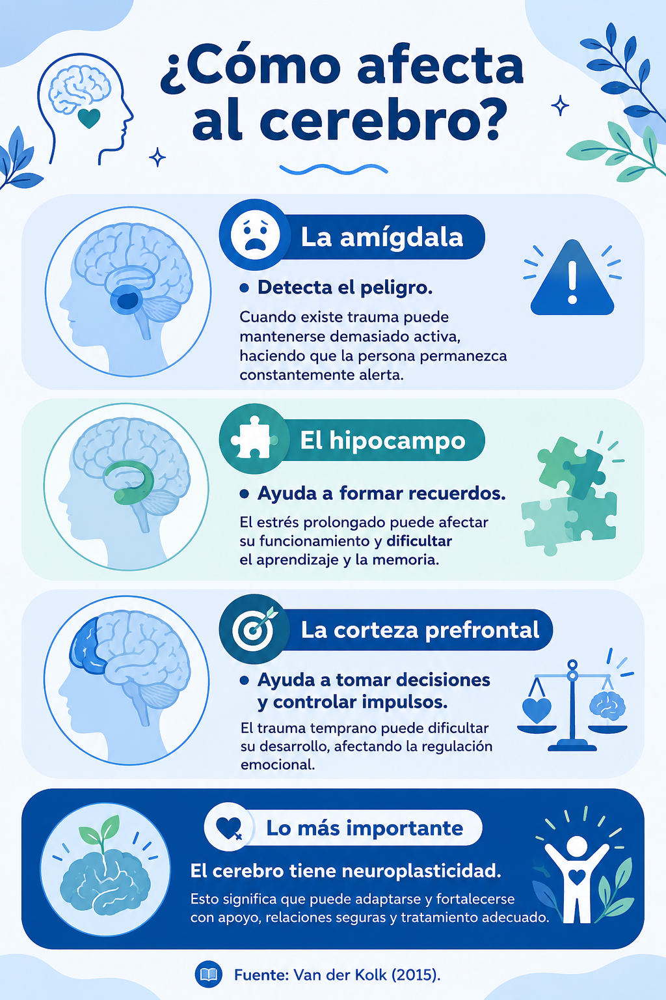

Las experiencias de la infancia pueden dejar huellas que influyen en nuestra forma de pensar, sentir y actuar. En Conecta Contigo encontrarás información confiable, herramientas de reflexión y recursos de apoyo para comprender el impacto de los traumas infantiles y los rasgos asociados al trastorno de personalidad antisocial, fortaleciendo el bienestar emocional y promoviendo la búsqueda de ayuda cuando sea necesaria.
Utilice las pestañas para navegar respecto a su interés.
Introducción
Las experiencias vividas durante la infancia pueden influir en el desarrollo emocional, social y conductual de una persona. Eventos adversos como el abuso, la negligencia, el abandono o la exposición a la violencia se han asociado con efectos duraderos en la salud mental y el bienestar, aunque no determinan por sí solos el desarrollo de un trastorno o una conducta específica.
Conecta Contigo es una plataforma de sensibilización creada para brindar información confiable sobre los traumas infantiles y el trastorno de personalidad antisocial. Además, ofrece herramientas de autorreflexión, como el registro emocional y el diario personal, así como recursos de apoyo y orientación para promover el bienestar emocional y favorecer la búsqueda oportuna de ayuda profesional.
¿Cómo influyen los traumas infantiles en el desarrollo de rasgos antisociales y conductas delictivas en adolescentes de secundaria del Colegio Jerusalem?
Objetivos
Nuestro propósito
En Conecta Contigo buscamos brindar un espacio seguro donde los adolescentes puedan comprender el impacto de los traumas infantiles, fortalecer su bienestar emocional y acceder a herramientas de apoyo que promuevan el autoconocimiento y la búsqueda de ayuda cuando sea necesario.
Objetivos específicos
Informar sobre los traumas infantiles, los rasgos antisociales y su impacto en el desarrollo adolescente.
Promover el autoconocimiento y la identificación temprana de señales de alerta mediante herramientas de reflexión.
Brindar recursos de orientación y apoyo que fomenten el cuidado de la salud mental y la búsqueda oportuna de ayuda profesional.
Conoce y Comprende
Capítulo I
Conocer cómo influyen las experiencias de la infancia en el desarrollo emocional es el primer paso para comprendernos mejor y promover el bienestar mental.
¿Qué es un trauma infantil?
Un trauma infantil es la respuesta emocional y psicológica que experimenta un niño o adolescente después de vivir una situación que percibe como amenazante o dañina. Estas experiencias pueden afectar su bienestar y, en algunos casos, influir en su desarrollo emocional y social.
American Psychological Association (APA); Medical News Today (2024).
Tipos de trauma
Trauma agudo
Proviene de un único evento difícil, como un accidente, un desastre natural o la pérdida repentina de un ser querido.
Trauma crónico
Se produce cuando una persona está expuesta durante mucho tiempo a situaciones dañinas, como la violencia intrafamiliar, el acoso escolar o el maltrato.
Trauma complejo
Aparece cuando existen múltiples experiencias traumáticas, generalmente dentro del entorno familiar o con personas cercanas.
Trauma secundario
Puede presentarse en quienes acompañan de cerca a personas que han vivido situaciones traumáticas, como familiares o profesionales de la salud.
Experiencias que pueden generar trauma
Abuso físico
Uso intencional de la fuerza que provoca o puede provocar lesiones, dolor o daño físico en un niño o adolescente.
Fuente: Organización Mundial de la Salud (OMS, 2022); CDC (2024).
Abuso emocional
Conductas repetidas como humillaciones, amenazas, insultos, rechazo o manipulación que afectan el desarrollo emocional y la autoestima del menor.
Fuente: Organización Mundial de la Salud (OMS, 2022); American Psychological Association.
Negligencia
Ocurre cuando los cuidadores no satisfacen las necesidades básicas del menor, como alimentación, salud, educación, protección o afecto.
Fuente: Centers for Disease Control and Prevention (CDC, 2024).
Abuso sexual
Cualquier actividad o contacto sexual impuesto a un menor, con o sin contacto físico, mediante manipulación, coerción o fuerza.
Fuente: Organización Mundial de la Salud (OMS, 2022).
Violencia intrafamiliar
Exposición a agresiones físicas, psicológicas o verbales entre los miembros del hogar, incluso cuando el menor no es la víctima directa.
Fuente: Organización Mundial de la Salud (OMS, 2022).
Acoso escolar
Conducta agresiva, repetitiva e intencional entre estudiantes que busca intimidar, humillar o excluir a otra persona.
Fuente: UNESCO (2019).
Exclusión social
Situación en la que una persona es aislada, discriminada o impedida de participar plenamente en su entorno social o educativo.
Fuente: UNICEF; Organización Mundial de la Salud (OMS).
¿Cómo puede afectar?
Emocional:
Ansiedad
Miedo
Culpa
Ira
Hipervigilancia
Flashbacks
Pesadillas
Físico:
Dolor de Cabeza
Problemas digestivos
Fatiga
Taquicardia
Dificultad para dormir
Área Neuronal

La importancia del apego
La Teoría del Apego, desarrollada por John Bowlby y ampliada por Mary Ainsworth, explica que los niños necesitan establecer vínculos seguros con sus cuidadores para desarrollarse emocionalmente de manera saludable.
Tipos de Apego:
Seguro
El niño se siente protegido, desarrolla confianza y regula mejor sus emociones.
Evitativo
Aprende a ocultar sus emociones por miedo al rechazo.
Ansioso
Busca constantemente aprobación y teme el abandono.
Desorganizado
Suele aparecer en contextos de abuso o negligencia y dificulta la regulación emocional.
Mientras que un apego inseguro puede aumentar la vulnerabilidad a problemas emocionales y conductuales.
Capítulo II
Este apartado será basado en el DSM-5-TR (2024)
Los traumas infantiles pueden aumentar el riesgo de ciertas dificultades emocionales y conductuales, pero no determinan que una persona desarrolle un trastorno o cometa delitos. La prevención, el apoyo y la intervención temprana marcan una diferencia.
Rasgos Antisociales y Desarrollo de la Personalidad
Las conductas antisociales tienen un origen complejo. En ellas influyen factores biológicos, psicológicos, familiares y sociales. Comprender estos factores ayuda a prevenir, detectar señales de alerta y promover una intervención temprana.
¿Qué son los rasgos antisociales?
Los rasgos antisociales son patrones persistentes de comportamiento que implican dificultades para respetar los derechos de otras personas y las normas sociales. Estos rasgos pueden incluir impulsividad, agresividad, manipulación o poca consideración por las consecuencias de los propios actos.
Trastorno de la Conducta
Es un trastorno que puede diagnosticarse en niños y adolescentes menores de 18 años, caracterizado por un patrón repetitivo de conductas que vulneran normas sociales o los derechos de otras personas.
Ejemplos
Agresiones frecuentes.
Destrucción de objetos.
Robos.
Mentiras repetidas.
Incumplimiento grave de normas.
Trastorno de la Personalidad Antisocial (TPA)
El TPA es un trastorno de la personalidad que solo puede diagnosticarse en adultos (18 años o más). Se caracteriza por un patrón persistente de desprecio por los derechos de los demás, impulsividad, engaño y ausencia de remordimiento.
Diferencias Principales
Trastorno de Conducta
Trastorno de Personalidad
Se diagnostica antes de los 18 años.
Se diagnostica desde los 18 años.
Se centra en conductas persistentes que violan normas.
Implica un patrón estable de personalidad.
Puede mejorar con intervención temprana.
Requiere valoración y tratamiento especializado.
¿Todos los adolescentes con problemas de conducta desarrollarán TPA?
La mayoría no desarrollará un Trastorno de la Personalidad Antisocial. El riesgo depende de múltiples factores como:
Predisposición biológica
Ambiente familiar
Salud mental
Apoyo social
Intervención temprana
¿Qué factores pueden influir?
Factores biológicos
Algunas personas pueden presentar una mayor vulnerabilidad relacionada con factores genéticos o diferencias en el funcionamiento cerebral.
Entorno familiar
El maltrato, la negligencia o la ausencia de vínculos seguros pueden afectar el desarrollo emocional.
Entorno escolar
El acoso escolar, el rechazo y la violencia también pueden influir en el bienestar psicológico.
Entorno social
Las relaciones con los pares, el barrio y el contexto comunitario pueden actuar como factores de riesgo o de protección.
Fuentes: Bowlby; Van der Kolk; Revista Criminalidad.
Señales de Alerta
No significan necesariamente un trastorno, pero pueden indicar la necesidad de apoyo profesional:
Agresividad persistente.
Mentiras frecuentes.
Crueldad hacia personas o animales.
Destrucción deliberada de objetos.
Robos repetidos.
Baja empatía.
Incumplimiento constante de normas.
Recuerda: Estas señales deben evaluarse en conjunto y por profesionales de la salud mental.
La importancia de la prevención
Los factores de riesgo no determinan el futuro de una persona. La evidencia científica muestra que la detección temprana, las relaciones de apoyo, el fortalecimiento de habilidades socioemocionales y el acceso oportuno a servicios de salud mental pueden favorecer un desarrollo más saludable.
Capítulo III
La salud mental de los adolescentes está influenciada por su entorno familiar, escolar y social. Comprender este contexto nos ayuda a reconocer la importancia de la prevención, el apoyo emocional y el acceso oportuno a recursos de ayuda.
La adolescencia en Colombia
La adolescencia es una etapa clave para el desarrollo personal y emocional. Según las proyecciones del DANE, los adolescentes enfrentan desafíos como la desigualdad, la violencia y las dificultades para acceder a oportunidades educativas y sociales.
Cuando estos factores de riesgo se combinan con experiencias adversas durante la infancia, pueden aumentar la vulnerabilidad a presentar problemas emocionales y de comportamiento. Sin embargo, la prevención y el apoyo temprano pueden marcar una diferencia significativa.
Fuente: DANE (2026).
¿Qué es el Sistema de Responsabilidad Penal para Adolescentes (SRPA)?
El SRPA es el sistema encargado de atender a los adolescentes que han cometido delitos en Colombia. Además de establecer responsabilidades, busca favorecer la educación, la restauración y la reintegración social, reconociendo que los adolescentes se encuentran en una etapa de desarrollo.
Diversos informes del ICBF muestran que muchos jóvenes que ingresan al sistema han estado expuestos a factores como la deserción escolar, la violencia, el abandono o la falta de apoyo familiar. Esto evidencia la importancia de fortalecer las acciones preventivas desde la infancia y la adolescencia.
Fuente: ICBF (2023).
La realidad de Barranquilla
Barranquilla es una ciudad con grandes oportunidades, pero también enfrenta desafíos relacionados con la violencia y la desigualdad en algunos sectores.
Estas situaciones pueden influir en el bienestar emocional de muchos adolescentes y reflejarse en la convivencia escolar mediante conflictos, agresiones o dificultades para manejar las emociones.
Fuente: Molinares-Torres, Bautista-Flórez y López-Miranda (2024).
¿Cómo influyen las escuelas?
En el Colegio Jerusalem, promover el bienestar emocional significa fortalecer la convivencia, identificar señales de alerta de manera temprana y facilitar el acceso a información y recursos de apoyo.
El colegio debe:
Promover relaciones basadas en el respeto.
Detectar señales de alerta de forma temprana.
Fomentar el apoyo entre compañeros.
Sensibilizar sobre la importancia de la salud mental.
Orientar hacia servicios profesionales cuando sea necesario.